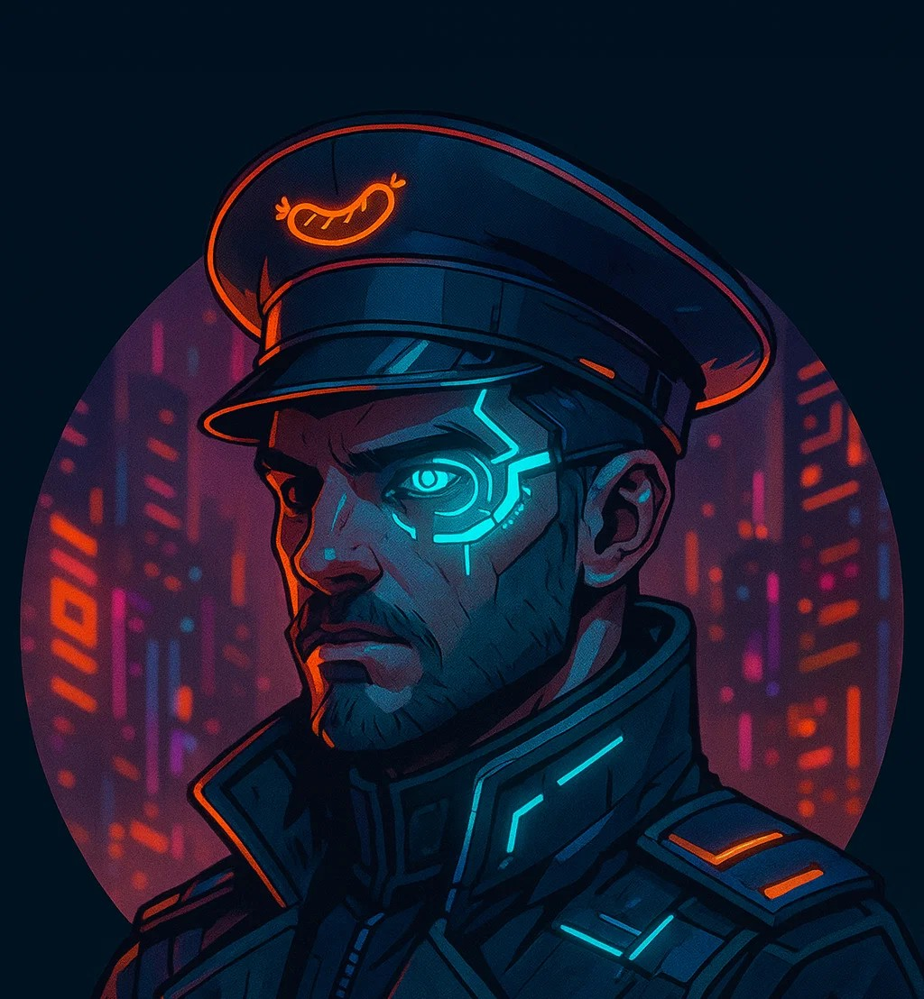

Über mich

Hallo! Ich heiße Bastian und bin der Betreiber dieser Webseite. Ich bin leidenschaftlicher Webentwickler mit Fokus auf moderne, benutzerfreundliche und ansprechende Webseiten.
Meine Schwerpunkte liegen in HTML, CSS, JavaScript und Backend-Technologien. Ich liebe es, Designs zu kreieren, die sowohl optisch als auch funktional überzeugen.
Neben der Webentwicklung interessiere ich mich für.
Danke, dass du vorbeischaust! Wenn du Fragen hast, schau gern auf der Kontaktseite vorbei.